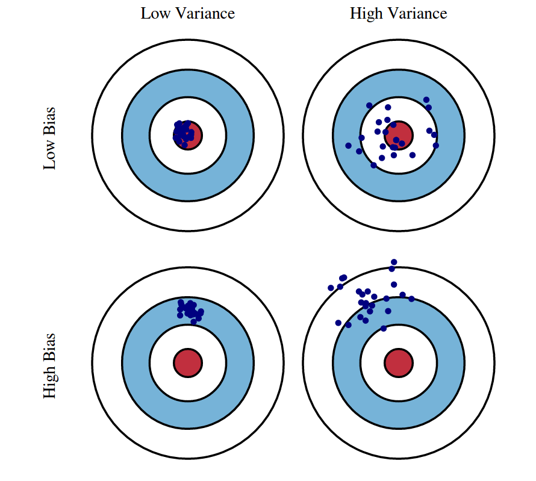
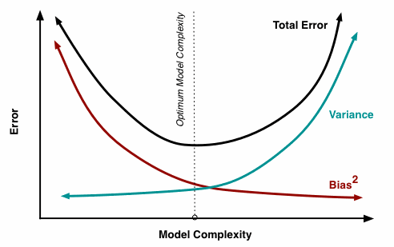
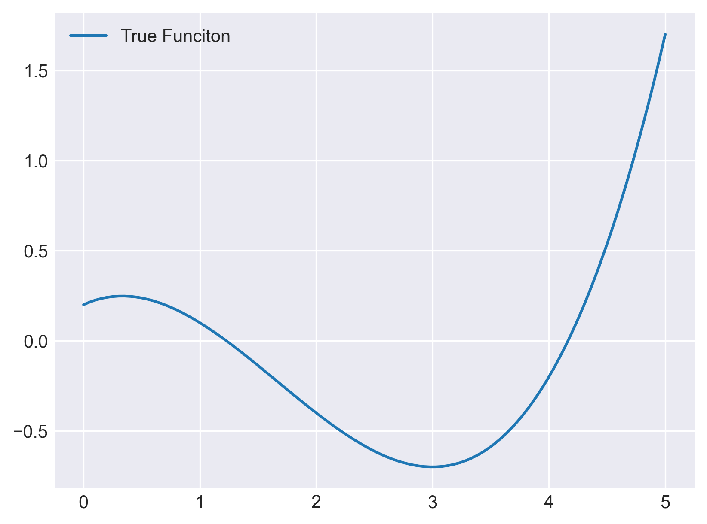
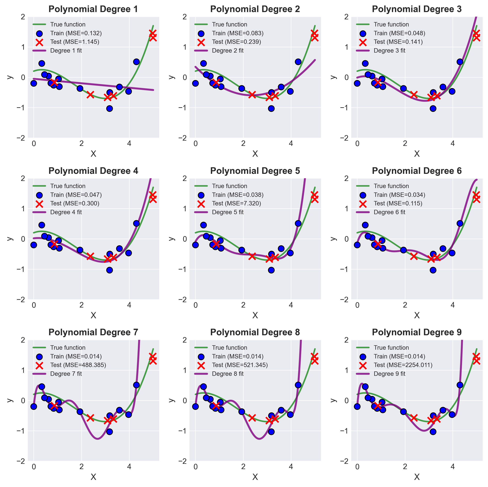
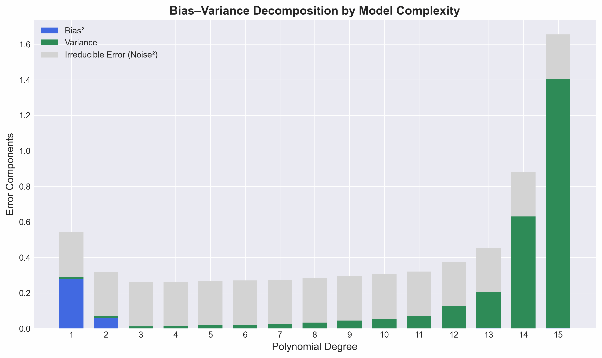
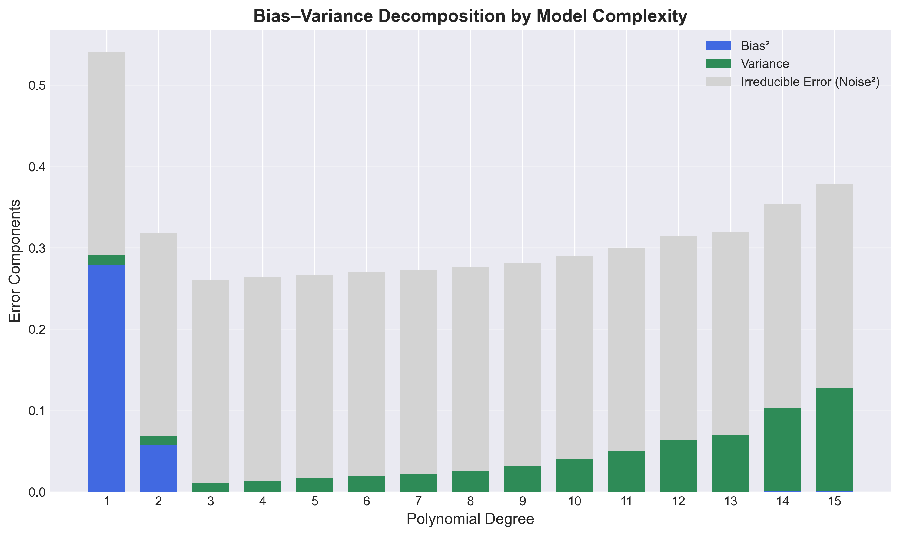

Introduction
All we assume is that data comes from some unknown joint distribution:
$$(x_i, y_i)\sim p(x, y)$$- $x$ is random variable with marginal $p(x)$
- $y$ is a random variable with conditional distribution $p(y\mid x)$
Our learning algorithm samples a dataset $\mathcal{D} = \lbrace (x_1, y_1), \dots, (x_N, y_N)\rbrace$ i.i.d from this distribution.
Bayes Optimal Predictor
If we wanted to pick a deterministic predictor $g(x)$ that minimizes the expected squared error under $p(x, y)$:
$$g^*(x) = \arg \min_g \mathbb{E}_{p(x, y)}\left[ (y - g(x))^2\right]$$We can solve this analytically as:
$$\frac{\partial}{\partial g(x)} \mathbb{E}_{p(x, y)}\left[ (y - g(x))^2\right] = 0 \Rightarrow g(x) = \mathbb{E}\left[ y \mid x\right] = f(x)$$So $f(x)$ is the true regression function or “expected label” - the best possible prediction in the mean-squared-error sense, directly derived from $p(x,y)$. Note that the choice of squared error is somewhat arbitrary. Suppose instead we chose absolute error loss, $\mathbb{E}_{p(x, y)}\left[ |y - g(x)|\right]$, the risk/error would then be minimized by the
$$f(x) = \operatorname {median} [p(y \mid x)]$$Despite this possibility, our preference will still be for squared error loss. The reasons for this are numerous, including: historical, ease of optimization, and protecting against large deviations.
Our goal becomes finding some $\hat{f}$ that is a good estimate of the regression function $f$. The expected prediction error can then be decomposed as:
$$ \mathbb{E}_{D'\sim p^n}[(y - \hat{f}(x))^2] = \text{Bias}^2(\hat{f}(x)) + \text{Var}(\hat{f}(x)) + \sigma^2 $$where $\hat{f}(x)$ is the learned model, $\text{Bias}^2$ measures systematic error, $\text{Var}$ is the variance across datasets, and $\sigma^2$ is the irreducible noise.
Conceptual Definition
- Error due to Bias: The error due to bias is taken as the difference between the expected (or average) prediction of our model and the correct value which we are trying to predict. Of course you only have one model so talking about expected or average prediction values might seem a little strange. However, imagine you could repeat the whole model building process more than once: each time you gather new data and run a new analysis creating a new model. Due to randomness in the underlying data sets, the resulting models will have a range of predictions. Bias measures how far off in general these models’ predictions are from the correct value.
- Error due to Variance: The error due to variance is taken as the variability of a model prediction for a given data point. Again, imagine you can repeat the entire model building process multiple times. The variance is how much the predictions for a given point vary between different realizations of the model.
Graphical Definition
We can create a graphical visualization of bias and variance using a bulls-eye diagram. Imagine that the center of the target is a model that perfectly predicts the correct values. As we move away from the bulls-eye, our predictions get worse and worse. Imagine we can repeat our entire model building process to get a number of separate hits on the target. Each hit represents an individual realization of our model, given the chance variability in the training data we gather. Sometimes we will get a good distribution of training data so we predict very well and we are close to the bulls-eye, while sometimes our training data might be full of outliers or non-standard values resulting in poorer predictions. These different realizations result in a scatter of hits on the target.
We can plot four different cases representing combinations of both high and low bias and variance.


Mathematical Definition
Assuming we are in a regression setting with dataset $\mathcal{D} = \lbrace (x_1, y_1), \dots, (x_N, y_N)\rbrace$ with $y\in \mathbb{R}$, we define the following:
Expected Label (given $x\in \mathbb{R}$)
Given a feature vector $x \in \mathbb{R}^D$, the expected label denotes the label you would expect to obtain:
$$ \bar{y}(x) = \mathbb{E}_{y \mid x}[Y] = \int_y y \, p(y \mid x) \, dy $$
We draw $n$ i.i.d. inputs for dataset $D$ form distribution $p$.
We then typically use some machine learning algorithm $\mathcal{A}$ on this data to learn a hypothesis (aka classifier). Formally, we can denote this process as $h_D = \mathcal{A}(D).$
For a given $h_D$, learned on dataset $D$ with an algorithm $\mathcal{A}$, we can compute the generalization error (as meased in squared loss) as follows:
Expected Test Error (given $h_D$)
$$ \mathbb{E}_{(x, y) \sim p} \big[(h_D(x) - y)^2\big] \;=\; \int_x \int_y (h_D(x) - y)^2 \, p(x, y) \, dy \, dx $$
Note that one can use other loss functions but here we are using squared loss because it has nice mathematical properties and also the most common loss function.
The previous statement is true for a given training set $D$. However, remember that $D$ itself is drawn from $p^n$, and is therefore a random variable. We can of course compute it’s expectation:
Expected Classifier (given $\mathcal{A}$)
$$ \bar{h} = \mathbb{E}_{D \sim p^n}[h_D] = \int_D h_D \, p(D) \, dD $$where
- $p(D)$ is the probability of drawing $D$ from $p^n$, and
- $\bar{h}$ represents a weighted average over functions (i.e., the expected hypothesis under the data distribution).
We can also use the fact that $h_D$ is a random variable to compute the expected test error only given $\mathcal{A}$, taking expectation over $D$.
Expected Test Error (given $\mathcal{A}$)
$$ \mathbb{E}_{D \sim p^n} \Big[\, \mathbb{E}_{(x, y) \sim p} \big[ (h_D(x) - y)^2 \big] \,\Big] $$Equivalent integral form:
$$ \int_D \int_x \int_y (h_D(x) - y)^2 \, p(D) \, p(x, y) \, dy \, dx \, dD $$where
- $D$ denotes the training dataset, sampled as $D \sim p^n$,
- $(x, y)$ is a test sample drawn from the data distribution $p(x, y)$, and
- $h_D$ is the hypothesis (predictor) learned from $D$.
We are interested in this expression, because it evaluates the quality of a machine learning algorithm $\mathcal{A}$ with respect to a data distrbution $p(x, y)$.
Decomposition of Expected Test Error
$$ \begin{aligned} \mathbb{E}_{x,y,D}\left[(h_D(x) - y)^2\right] &= \mathbb{E}_{x,y,D}\left[\big((h_D(x) - \bar{h}(x)) + (\bar{h}(x) - y)\big)^2\right] \\ &= \mathbb{E}_{x,y,D}\left[(h_D(x) - \bar{h}(x))^2\right] + 2\mathbb{E}_{x,y,D}\left[(h_D(x) - \bar{h}(x))(\bar{h}(x) - y)\right] \\ &\quad + \mathbb{E}_{x,y,D}\left[(\bar{h}(x) - y)^2\right] \end{aligned} $$We can show that the middle term of the above equation is $0$ as follows
$$ \begin{aligned} \mathbb{E}_{x, y, D}\!\left[\left(h_{D}(x) - \bar{h}(x)\right) \left(\bar{h}(x) - y\right)\right] &= \mathbb{E}_{x, y}\!\left[\mathbb{E}_{D}\!\left[h_{D}(x) - \bar{h}(x)\right] \left(\bar{h}(x) - y\right)\right] \\[6pt] &= \mathbb{E}_{x, y}\!\left[\left(\mathbb{E}_{D}\!\left[h_{D}(x)\right] - \bar{h}(x)\right) \left(\bar{h}(x) - y\right)\right] \\[6pt] &= \mathbb{E}_{x, y}\!\left[\left(\bar{h}(x) - \bar{h}(x)\right) \left(\bar{h}(x) - y\right)\right] \\[6pt] &= \mathbb{E}_{x, y}[0] \\[4pt] &= 0 \end{aligned} $$Returning to the earlier expression, we’re left with the variance and another term
$$ \begin{aligned} \mathbb{E}_{x, y, D}\!\left[\left(h_{D}(x) - y\right)^{2}\right] &= \underbrace{\mathbb{E}_{x, D}\!\left[\left(h_{D}(x) - \bar{h}(x)\right)^{2}\right]}_{\text{Variance}} + \mathbb{E}_{x, y}\!\left[\left(\bar{h}(x)- y\right)^{2}\right] \end{aligned} $$We can break down the second term in the above equation as follows:
$$ \begin{aligned} \mathbb{E}_{x, y}\!\left[\left(\bar{h}(x) - y\right)^{2}\right] &= \mathbb{E}_{x, y}\!\left[\left((\bar{h}(x) - \bar{y}(x)) + (\bar{y}(x) - y)\right)^{2}\right] \\[6pt] &= \underbrace{\mathbb{E}_{x, y}\!\left[\left(\bar{y}(x) - y\right)^{2}\right]}_{\text{Noise}} + \underbrace{\mathbb{E}_{x}\!\left[\left(\bar{h}(x) - \bar{y}(x)\right)^{2}\right]}_{\text{Bias}^2} + 2\,\mathbb{E}_{x, y}\!\left[\left(\bar{h}(x) - \bar{y}(x)\right) \left(\bar{y}(x) - y\right)\right] \end{aligned} $$The third term in the equation above is $0$, as we show below
$$ \begin{aligned} \mathbb{E}_{x, y}\!\left[\left(\bar{h}(x) - \bar{y}(x)\right) \left(\bar{y}(x) - y\right)\right] &= \mathbb{E}_{x}\!\left[\mathbb{E}_{y \mid x}\!\left[\bar{y}(x) - y\right] \left(\bar{h}(x) - \bar{y}(x)\right)\right] \\[6pt] &= \mathbb{E}_{x}\!\left[\left(\bar{y}(x) - \mathbb{E}_{y \mid x}\![y]\right) \left(\bar{h}(x) - \bar{y}(x)\right)\right] \\[6pt] &= \mathbb{E}_{x}\!\left[\left(\bar{y}(x) - \bar{y}(x)\right) \left(\bar{h}(x) - \bar{y}(x)\right)\right] \\[6pt] &= \mathbb{E}_{x}[0] \\[4pt] &= 0 \end{aligned} $$This gives us the decomposition of expected test error as follows
$$ \underbrace{\mathbb{E}_{x, y, D}\!\left[\left(h_{D}(x) - y\right)^{2}\right]}_{\text{Expected Test Error}} = \underbrace{\mathbb{E}_{x, D}\!\left[\left(h_{D}(x) - \bar{h}(x)\right)^{2}\right]}_{\text{Variance}} + \underbrace{\mathbb{E}_{x, y}\!\left[\left(\bar{y}(x) - y\right)^{2}\right]}_{\text{Noise}} + \underbrace{\mathbb{E}_{x}\!\left[\left(\bar{h}(x) - \bar{y}(x)\right)^{2}\right]}_{\text{Bias}^2} $$-
Variance: Captures how much your classifier changes if you train on a different training set. How “over-specialized” is your classifier to a particular training set (overfitting)? If we have the best possible model for our training data, how far off are we from the average classifier?
-
Bias: What is the inherent error that you obtain from your classifier even with infinite training data? This is due to your classifier being “biased” to a particular kind of solution (e.g. linear classifier). In other words, bias is inherent to your model.
-
Noise: How big is the data-intrinsic noise? This error measures ambiguity due to your data distribution and feature representation. You can never beat this, it is an aspect of the data.
For a simplified version:
If we denote the variable we are trying to predict as $Y$ and our covariates as $X$, we may assume that there is a relationship relating one to the other such as:
$$ Y = f(X) + \varepsilon $$where the error term $\varepsilon$ is normally distributed with a mean of zero, like so:
$$ \varepsilon \sim \mathcal{N}(0, \sigma_\varepsilon^2) $$We may estimate a model $\hat{f}(X)$ (denoted $h_D$ in earlier section) for $f(X)$ using linear regression or another modeling technique.
In this case, the expected squared prediction error at a point $x$ is:
This error may then be decomposed into bias and variance components:
$$ \text{Err}(x) = (\mathbb{E}[\hat{f}(x)] - f(x))^2 + \mathbb{E}[(\hat{f}(x) - \mathbb{E}[\hat{f}(x)])^2] + \sigma_\varepsilon^2 $$Or equivalently,
$$ \text{Err}(x) = \text{Bias}^2 + \text{Variance} + \text{Irreducible Error} $$That third term, irreducible error, is the noise term in the true relationship that cannot fundamentally be reduced by any model.
Given the true model and infinite data to calibrate it, we should be able to reduce both the bias and variance terms to 0.
However, in a world with imperfect models and finite data, there is a tradeoff between minimizing bias and minimizing variance as seen in Figure 2..
Experimentation
For the following experiments, I am calculting the best fit as follows:
$$\boxed{\theta_{\text{MAP}} = (X^\top X + \alpha I)^{-1}X^\top y}$$I can simulate the MLE results by putting $\alpha=0$ giving me Estimate when there is no prior information/distribution on weights/coefficients.
The (unknown) true function used for experiments is:
$$ f(x) = 0.1\,x^3 - 0.5\,x^2 + 0.3\,x + 0.2 $$

Interactive Demo
Experiment with polynomial degree and regularization below:
Experimental Results
Setup:
500 random datasets, each with 100 training points ($N=100$); noise: $\sigma=0.5$.
Without Regularization ($\alpha = 0$)
| Degree | Bias² | Variance | Condition Number |
|---|---|---|---|
| 1 | 0.2789 | 0.0124 | 1.00e+00 |
| 2 | 0.0576 | 0.0109 | 7.92e+00 |
| 3 | 0.0000 | 0.0111 | 3.95e+01 |
| 4 | 0.0000 | 0.0140 | 2.49e+02 |
| 5 | 0.0000 | 0.0172 | 1.79e+03 |
| 6 | 0.0000 | 0.0205 | 1.37e+04 |
| 7 | 0.0000 | 0.0248 | 1.13e+05 |
| 8 | 0.0001 | 0.0329 | 9.60e+05 |
| 9 | 0.0001 | 0.0443 | 8.57e+06 |
| 10 | 0.0001 | 0.0548 | 7.86e+07 |
| 11 | 0.0001 | 0.0706 | 7.49e+08 |
| 12 | 0.0005 | 0.1235 | 7.29e+09 |
| 13 | 0.0017 | 0.2015 | 7.32e+10 |
| 14 | 0.0002 | 0.6302 | 7.38e+11 |
| 15 | 0.0036 | 1.4014 | 7.77e+12 |
- Bias quickly drops to zero by degree 3 (the true function’s degree).
- Variance increases modestly for low degrees, but explodes as the condition number becomes large ($\gtrsim 10^9$).

With Regularization ($\alpha = 0.1$ × degree)
| Degree | $\alpha$ | Bias² | Variance | Condition Number |
|---|---|---|---|---|
| 2 | 0.0200 | 0.0576 | 0.0109 | 7.91e+00 |
| 3 | 0.0300 | 0.0000 | 0.0111 | 3.94e+01 |
| 4 | 0.0400 | 0.0000 | 0.0139 | 2.47e+02 |
| 5 | 0.0500 | 0.0001 | 0.0170 | 1.74e+03 |
| 6 | 0.0600 | 0.0001 | 0.0198 | 1.26e+04 |
| 7 | 0.0700 | 0.0001 | 0.0225 | 8.64e+04 |
| 8 | 0.0800 | 0.0001 | 0.0259 | 4.91e+05 |
| 9 | 0.0900 | 0.0001 | 0.0313 | 2.18e+06 |
| 10 | 0.1000 | 0.0001 | 0.0398 | 7.92e+06 |
| 11 | 0.1100 | 0.0002 | 0.0501 | 2.63e+07 |
| 12 | 0.1200 | 0.0002 | 0.0637 | 8.58e+07 |
| 13 | 0.1300 | 0.0002 | 0.0696 | 2.82e+08 |
| 14 | 0.1400 | 0.0004 | 0.1030 | 9.44e+08 |
| 15 | 0.1500 | 0.0007 | 0.1272 | 3.23e+09 |
- Regularization controls variance even for high degrees.
- Condition number stays manageable, preventing numerical instability.
- Bias increases only minimally, a small price for much lower variance at high degrees.

K-Nearest Neighbor Interactive Example
Conclusion
The bias-variance tradeoff is clearly illustrated by these experiments:
- Degree 3 is optimal for this cubic regression task.
- Without regularization, variance explodes beyond degree 10–12 due to numerical instability.
- Regularization ($\alpha$ increasing with degree) stabilizes high-degree fits, keeping variance and condition number controlled.
- The table and figures above reveal the subtle interplay between bias, variance, model complexity, and regularization.
References
- Bishop, C. M. (2006). Pattern Recognition and Machine Learning. Springer.
- Cornell University CS4780/5780: Machine Learning for Intelligent Systems Lecture Notes. (Lecture 12: Bias‑Variance Tradeoff) Retrieved from: https://www.cs.cornell.edu/courses/cs4780/2024sp/lectures/lecturenote12.html
- Fortmann‑Roe, S. (2012). Understanding the Bias‑Variance Tradeoff. Retrieved from: https://scott.fortmann-roe.com/docs/BiasVariance.html